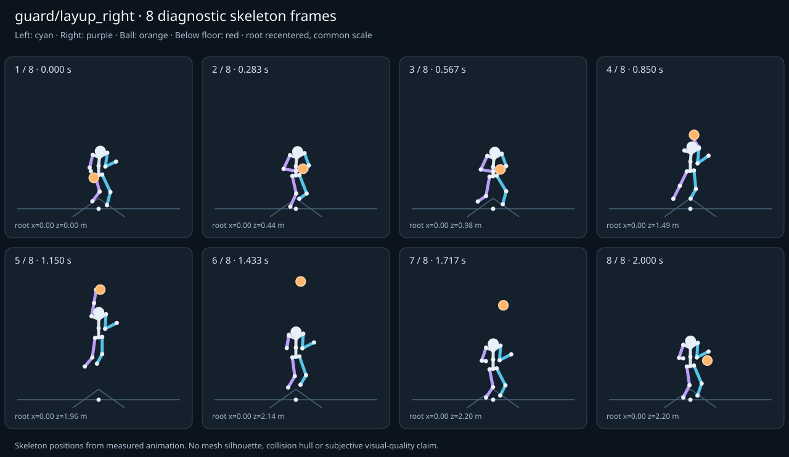

מה הוריד את הציון
- קפיצות פוזה: LeftHand בזמן 0.5833 ש׳; קפיצת סיבוב שקולה 122.2538 מעלות ב־60Hz (אדום)
- כניסה ויציאה מול המתנה: פער ב־כניסה מול המתנה; יחס חריגה 3.3353 (אדום)
- מגע בכדור: פער פני כדור 0.0306 מ׳, RightHand, בזמן 0.5833 ש׳ (צהוב)
כיסוי: 100%. לא כל מדד חל על כל קליפ; הסטטוס והראיות מפורטים למטה.
שמונה פריימים
תצוגת שלד אבחונית שנבנתה מהפריימים הנמדדים. צד שמאל בכחול, ימין בסגול, כדור בכתום. מיקום השורש ממורכז לצפייה; מיקומו בעולם כתוב בכל פריים.

המדדים והראיות
| מדד | מצב | ערך | ציון | סף ופרטי מדידה |
|---|---|---|---|---|
| החלקת רגליים | ירוק | 0.001 height ratio | 99 | {
"definition": {
"label": "החלקת רגליים",
"unit": "height ratio",
"green": 0.01,
"yellow": 0.035,
"weight": 18,
"description": "Maximum horizontal sole displacement from the first sample of each declared support window, divided by character height. Inferred support is used only when no windows were supplied."
},
"value": 0.000489,
"status": "green",
"score": 99.02,
"evidence": {
"coordinateSpace": "native GLB external Motion node (applied once)",
"supportSource": "declared",
"windows": 5,
"samples": 79,
"maxDriftMeters": 0.000919,
"p95SpeedMetersPerSecond": 0.018212,
"worst": {
"bone": "LeftFoot",
"t": 0.716667,
"start": 0.6,
"end": 0.8,
"driftMeters": 0.000919
}
}
} |
| חדירה לרצפה | ירוק | 0.002 height ratio | 94 | {
"definition": {
"label": "חדירה לרצפה",
"unit": "height ratio",
"green": 0.005,
"yellow": 0.02,
"weight": 15,
"description": "Maximum depth of the supplied sole probe points and all skeletal joint centers below the declared floor plane, divided by height. Sole probes are not a mesh collision audit."
},
"value": 0.00151,
"status": "green",
"score": 93.96,
"evidence": {
"samples": 2420,
"floorY": 0,
"probeKind": "declared sole probes plus skeletal joint centers (no mesh surfaces)",
"maxDepthMeters": 0.002839,
"worst": {
"t": 0.75,
"bone": "LeftFoot",
"depthMeters": 0.002839,
"y": -0.002839
}
}
} |
| קפיצות פוזה | אדום | 8.15 discontinuity ratio | 0 | {
"definition": {
"label": "קפיצות פוזה",
"unit": "discontinuity ratio",
"green": 1,
"yellow": 2.5,
"weight": 18,
"description": "Maximum adjacent 60 Hz-equivalent step: root-relative marker displacement / 0.04 height, root-relative rotation / 15 degrees, or root translation / 0.08 height. A fast continuous action can also exceed this screening threshold."
},
"value": 8.15025,
"status": "red",
"score": 0,
"evidence": {
"adjacentPairs": 120,
"observations": 2040,
"maxDegrees60Hz": 122.253754,
"maxMarkerStepHeight60Hz": 0.113165,
"maxRootStepHeight60Hz": 0.028812,
"worst": {
"ratio": 8.150250235870624,
"t": 0.583333,
"previousTime": 0.566667,
"bone": "LeftHand",
"markerStepHeight60Hz": 0.113165,
"degrees60Hz": 122.253754
}
}
} |
| חריגות אנטומיות | ירוק | 0 % affected frames | 100 | {
"definition": {
"label": "חריגות אנטומיות",
"unit": "% affected frames",
"green": 0.5,
"yellow": 3,
"weight": 14,
"description": "Percentage of frames with elbow or knee flexion above 165 degrees, neck bend above 80 degrees, or a segment length changing by more than 5%. Optional calibrated hinge checks detect reverse knee flexion above 8 degrees. Conservative marker limits do not diagnose axial joint twist."
},
"value": 0,
"status": "green",
"score": 100,
"evidence": {
"testedFrames": 121,
"affectedFrames": 0,
"checks": 2057,
"maxLimbFlexionDegrees": 158.489524,
"maxRelativeSegmentLengthChange": 0,
"hingeDirectionChecked": true,
"axialTwistChecked": false,
"violations": []
}
} |
| מגע בכדור | צהוב | 0.016 height ratio | 79 | {
"definition": {
"label": "מגע בכדור",
"unit": "height ratio",
"green": 0.015,
"yellow": 0.05,
"weight": 13,
"description": "Maximum absolute distance from the ball surface to the sampled, bone-transformed declared contact point, divided by height. Events are evaluated at their exact declared times by interpolation."
},
"value": 0.016267,
"status": "yellow",
"score": 78.91,
"evidence": {
"radiusMeters": 0.12,
"samples": 91,
"missed": [],
"contacts": [
{
"t": 0.583333,
"bone": "RightHand",
"gapMeters": 0.030582,
"signedGapMeters": -0.030582,
"centerDistanceMeters": 0.089418,
"contactPoint": [
-0.083008,
1.082212,
1.343044
],
"ballCenter": [
0,
1.110465,
1.360569
],
"declaredLocalPoint": true
},
{
"t": 0.183333,
"bone": "RightHand",
"gapMeters": 0.021579,
"signedGapMeters": -0.021579,
"centerDistanceMeters": 0.098421,
"contactPoint": [
-0.214525,
1.081062,
0.676966
],
"ballCenter": [
-0.17,
0.998262,
0.64784
],
"declaredLocalPoint": true
},
{
"t": 0.116667,
"bone": "RightHand",
"gapMeters": 0.003013,
"signedGapMeters": -0.003013,
"centerDistanceMeters": 0.116987,
"contactPoint": [
-0.338424,
0.823931,
0.495202
],
"ballCenter": [
-0.34,
0.706994,
0.49216
],
"declaredLocalPoint": true
},
{
"t": 0.05,
"bone": "RightHand",
"gapMeters": 0.00298,
"signedGapMeters": -0.00298,
"centerDistanceMeters": 0.11702,
"contactPoint": [
-0.338443,
0.82484,
0.37909
],
"ballCenter": [
-0.34,
0.707869,
0.376111
],
"declaredLocalPoint": true
},
{
"t": 0.016667,
"bone": "RightHand",
"gapMeters": 0.001474,
"signedGapMeters": -0.001474,
"centerDistanceMeters": 0.118526,
"contactPoint": [
-0.339904,
0.944929,
0.355434
],
"ballCenter": [
-0.34,
0.826654,
0.347716
],
"declaredLocalPoint": true
},
{
"t": 0.15,
"bone": "RightHand",
"gapMeters": 0.001428,
"signedGapMeters": -0.001428,
"centerDistanceMeters": 0.118572,
"contactPoint": [
-0.339961,
0.943547,
0.572867
],
"ballCenter": [
-0.34,
0.825237,
0.565
],
"declaredLocalPoint": true
},
{
"t": 0.683333,
"bone": "RightHand",
"gapMeters": 0.001085,
"signedGapMeters": -0.001085,
"centerDistanceMeters": 0.118915,
"contactPoint": [
-0.017052,
1.17078,
1.363393
],
"ballCenter": [
-0.005341,
1.265043,
1.434933
],
"declaredLocalPoint": true
},
{
"t": 0.85,
"bone": "RightHand",
"gapMeters": 0.001076,
"signedGapMeters": -0.001076,
"centerDistanceMeters": 0.118924,
"contactPoint": [
-0.047839,
1.841719,
1.67003
],
"ballCenter": [
-0.035,
1.93702,
1.74
],
"declaredLocalPoint": true
},
{
"t": 0.783333,
"bone": "RightHand",
"gapMeters": 0.00107,
"signedGapMeters": 0.00107,
"centerDistanceMeters": 0.12107,
"contactPoint": [
-0.03052,
1.531999,
1.527853
],
"ballCenter": [
-0.021394,
1.628756,
1.600053
],
"declaredLocalPoint": true
},
{
"t": 0.883333,
"bone": "RightHand",
"gapMeters": 0.000769,
"signedGapMeters": -0.000769,
"centerDistanceMeters": 0.119231,
"contactPoint": [
-0.057676,
1.998446,
1.741663
],
"ballCenter": [
-0.041927,
2.093971,
1.811253
],
"declaredLocalPoint": true
},
{
"t": 0.75,
"bone": "RightHand",
"gapMeters": 0.000647,
"signedGapMeters": 0.000647,
"centerDistanceMeters": 0.120647,
"contactPoint": [
-0.028529,
1.39255,
1.46486
],
"ballCenter": [
-0.015213,
1.488722,
1.53648
],
"declaredLocalPoint": true
},
{
"t": 0.65,
"bone": "RightHand",
"gapMeters": 0.000578,
"signedGapMeters": -0.000578,
"centerDistanceMeters": 0.119422,
"contactPoint": [
-0.017275,
1.097222,
1.331929
],
"ballCenter": [
-0.002147,
1.192676,
1.40208
],
"declaredLocalPoint": true
},
{
"t": 0.916667,
"bone": "RightHand",
"gapMeters": 0.000452,
"signedGapMeters": -0.000452,
"centerDistanceMeters": 0.119548,
"contactPoint": [
-0.065903,
2.149504,
1.810528
],
"ballCenter": [
-0.048606,
2.245284,
1.879947
],
"declaredLocalPoint": true
},
{
"t": 0.95,
"bone": "RightHand",
"gapMeters": 0.000245,
"signedGapMeters": -0.000245,
"centerDistanceMeters": 0.119755,
"contactPoint": [
-0.072718,
2.289445,
1.874036
],
"ballCenter": [
-0.054787,
2.385318,
1.94352
],
"declaredLocalPoint": true
},
{
"t": 0.716667,
"bone": "RightHand",
"gapMeters": 0.000201,
"signedGapMeters": -0.000201,
"centerDistanceMeters": 0.119799,
"contactPoint": [
-0.021741,
1.270647,
1.408532
],
"ballCenter": [
-0.009779,
1.365604,
1.480587
],
"declaredLocalPoint": true
},
{
"t": 0.983333,
"bone": "RightHand",
"gapMeters": 0.000138,
"signedGapMeters": -0.000138,
"centerDistanceMeters": 0.119862,
"contactPoint": [
-0.078251,
2.412559,
1.929775
],
"ballCenter": [
-0.060221,
2.508436,
1.999413
],
"declaredLocalPoint": true
},
{
"t": 0.616667,
"bone": "RightHand",
"gapMeters": 0.000134,
"signedGapMeters": -0.000134,
"centerDistanceMeters": 0.119866,
"contactPoint": [
-0.018052,
1.058185,
1.314945
],
"ballCenter": [
-0.000446,
1.154143,
1.384587
],
"declaredLocalPoint": true
},
{
"t": 0.816667,
"bone": "RightHand",
"gapMeters": 0.000085,
"signedGapMeters": -0.000085,
"centerDistanceMeters": 0.119915,
"contactPoint": [
-0.035205,
1.683601,
1.597876
],
"ballCenter": [
-0.028073,
1.780069,
1.668747
],
"declaredLocalPoint": true
},
{
"t": 1.016667,
"bone": "RightHand",
"gapMeters": 0.000073,
"signedGapMeters": -0.000073,
"centerDistanceMeters": 0.119927,
"contactPoint": [
-0.082536,
2.513117,
1.975283
],
"ballCenter": [
-0.064659,
2.608997,
2.045067
],
"declaredLocalPoint": true
},
{
"t": 0.6,
"bone": "RightHand",
"gapMeters": 0.000066,
"signedGapMeters": -0.000066,
"centerDistanceMeters": 0.119934,
"contactPoint": [
-0.018,
1.04804,
1.3104
],
"ballCenter": [
0,
1.14404,
1.38
],
"declaredLocalPoint": true
}
],
"contactDetailsTruncated": true,
"coordinateSpace": "native GLB external Motion node (applied once)"
}
} |
| כניסה ויציאה מול המתנה | אדום | 3.335 continuity ratio | 47 | {
"definition": {
"label": "כניסה ויציאה מול המתנה",
"unit": "continuity ratio",
"green": 1,
"yellow": 3,
"weight": 10,
"description": "Worst entry/exit mismatch to the best matching idle phase: RMS marker error / 0.04 height, RMS bone rotation / 25 degrees, or RMS endpoint velocity error / 0.75 height per second. Horizontal root translation is aligned; root height and body pose remain measurable."
},
"value": 3.335312,
"status": "red",
"score": 47.21,
"evidence": {
"entry": {
"ratio": 3.335312335828159,
"t": 0,
"idleTime": 0,
"markers": 17,
"rmsPositionHeight": 0.133412,
"rmsRotationDegrees": 44.03594,
"rmsVelocityHeightPerSecond": 0.687042,
"velocityEvaluated": true
},
"exit": {
"ratio": 3.204206546281847,
"t": 2,
"idleTime": 0,
"markers": 17,
"rmsPositionHeight": 0.128168,
"rmsRotationDegrees": 42.640423,
"rmsVelocityHeightPerSecond": 0.049641,
"velocityEvaluated": true
},
"worstEndpoint": "entry",
"alignment": "horizontal root translation; raw asset poses used when provided"
}
} |
| מהירות גוף מול צעדים | לא חל | — relative speed error | — | {
"definition": {
"label": "מהירות גוף מול צעדים",
"unit": "relative speed error",
"green": 0.2,
"yellow": 0.5,
"weight": 8,
"description": "Relative difference between average root travel speed and the median backward support-foot sweep speed relative to the root. Cadence and implied stride lengths are also reported. In-place clips need an explicit reference travel scenario; stationary actions are not scored as locomotion."
},
"value": null,
"status": "not-applicable",
"score": null,
"reason": "This action is not declared locomotion.",
"evidence": {}
} |
| סימטריה | ירוק | 0 relative mismatch | 100 | {
"definition": {
"label": "סימטריה",
"unit": "relative mismatch",
"green": 0.03,
"yellow": 0.1,
"weight": 4,
"description": "Maximum bilateral segment-length mismatch. Looping locomotion additionally compares reflected half-cycle leg markers; explicit pose symmetry compares simultaneous bilateral markers. One-sided actions retain unscored motion diagnostics, so a valid kick or dribble arm is not penalized for intentional asymmetry."
},
"value": 0.000005,
"status": "green",
"score": 100,
"evidence": {
"mode": "mirrored clip pair",
"modeSource": "structural default for intentional asymmetry",
"structuralMismatch": 0,
"segments": [
{
"segment": "Arm-ForeArm",
"mismatch": 0
},
{
"segment": "ForeArm-Hand",
"mismatch": 0
},
{
"segment": "UpLeg-Leg",
"mismatch": 0
},
{
"segment": "Leg-Foot",
"mismatch": 0
}
],
"motionRmsHeight": 0.000005,
"worstMotion": {
"t": 0.1,
"errorHeight": 0.000005
},
"bilateralPoseRmsHeightUnscored": 0.152635,
"note": "One-sided authored actions are checked for structural symmetry only."
}
} |